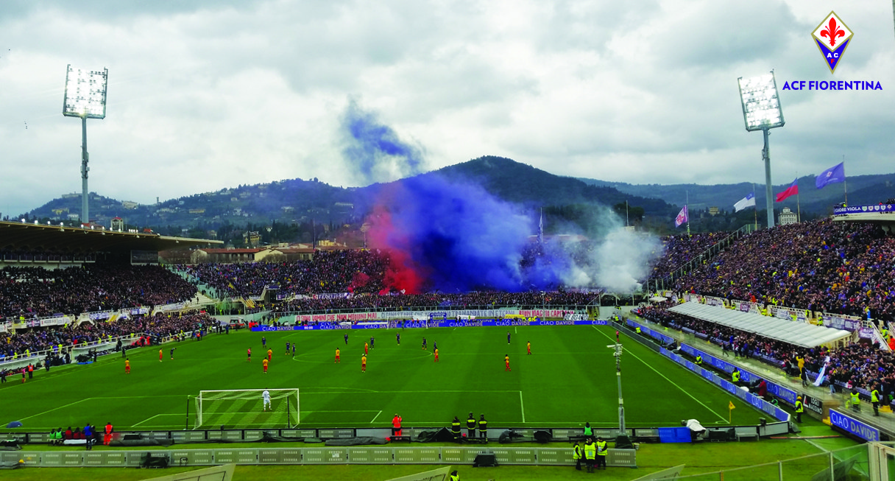
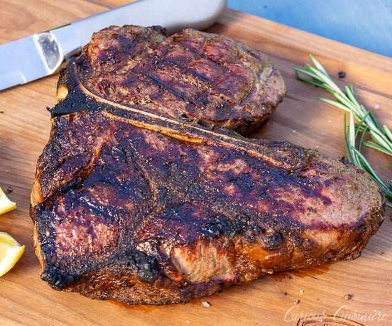

Have an eye for detail -- you'll love Uffizi
So many paintings and scuptures
The Uffizi. Uffizi Galleries. The Gallery entirely occupies the first and second floors of the large building constructed between 1560 and 1580 and designed by Giorgio Vasari. It is famous worldwide for its outstanding collections of ancient sculptures and paintings (from the Middle Ages to the Modern period).

Just as Kiwi's most passinate sport is rugby; Italy has soccer.
Just once, I would like to see something other than rugby being advertised as the best game ... who's with me? No-one, typical.

Napples is home of pizza and coffee, what could possibly top that? ... Florence has a really good steak.
The steak is cut from the loin, just below the rib cage and above the round or rump (depending on which side of the pond you come from!). The higher cuts, nearer to the rib cage also contain the fillet, whereas the lower cuts do not. The Bistecca alla Fiorentina refers to both cuts, which are known as bistecca nel filetto and bistecca nella costola respectively. This already creates some confusion, as a Bistecca alla Fiorentina outside Tuscany normally specifically refers to the bistecca nel filetto only; when ordering in Florence some tense moments may occur upon presentation of the dish.